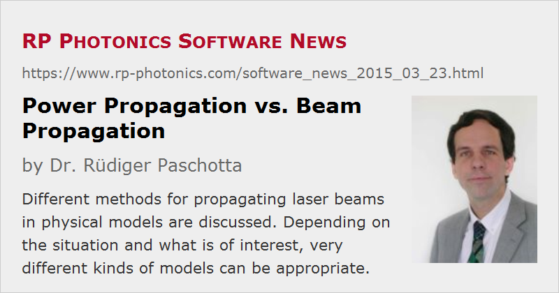

Power Propagation vs. Beam Propagation
Posted on 2015-03-23 in the RP Photonics Software News (available as e-mail newsletter!)
Permanent link: https://www.rp-photonics.com/software_news_2015_03_23.html
Author: Dr. Rüdiger Paschotta, RP Photonics Consulting GmbH
Abstract: Different methods for propagating laser beams in physical models are discussed. Depending on the situation and what is of interest, very different kinds of models can be appropriate.

Within models for lasers or nonlinear devices, it is very often required to simulate the propagation of a laser beam through some device. There are very different ways to do that:
- In the simplest case, one only considers the change of optical power during the passage. The transverse beam profile is assumed to stay constant – e.g., that of a Gaussian beam with a certain beam radius. We call that power propagation.
- In other cases, one represents a cross-section of the beam with a two-dimensional array of complex amplitudes and numerically propagates that whole array through the device; that is called beam propagation. Here, effects like diffraction and gain guiding can be taken into account.
- In still other cases, the detailed temporal and spectral evolution is also of interest. If the transverse beam profile can be assumed to stay constant, one simply has a linear array of complex amplitudes, spanning some range of time with a certain temporal resolution. Otherwise, one has to combine this with beam propagation and then has to propagate a three-dimensional array of complex amplitudes; if you want to study the complete evolution in propagation direction, the results will fill a four-dimensional array (with indices x, y, z, t).
Physical modeling should always be based on a model which is just as sophisticated as required, but not more than that; otherwise, one is likely to waste time – not only computation time, but also time needed for providing input data and analyzing the results. (I have discussed this last summer in the posting "What Makes a Good Physics Model".)
In the following, I prefer to discuss a number of example cases.
Fiber Lasers
In many fiber lasers, the used fiber is single-mode at the laser wavelength. This implies that the beam profile will closely resembles that of the guided mode of the fiber – with only small corrections due to thermal effects or gain guiding, for example. It is then usually appropriate to use simple power propagation, neglecting the transverse dimension. The transverse beam profiles and doping profile can still be taken into account; the modeling software than has to calculate certain overlap factors, which describe the strengths of the coupling of optical waves with the laser-active dopant.
In double-clad fibers, the situation concerning the pump beam is more complicated. The pump cladding is highly multimode, and the distribution of power over these modes can change substantially during propagation. Consequently, the beam profile can also change – typically, it develops a certain reduction in intensity in and around the doped fiber core. Such effects can be treated with numerical beam propagation. Unfortunately, this is naturally much more time-consuming, and even defining the input beam profile is not trivial; normally, that beam profile is not even really known. (In our RP Fiber Power software, it is possible to construct a realistic input beam profile as a superposition of guided modes with random power and phase values; I have once demonstrated this in an example case.) Note that the results may be influenced by factors like bending and stress, microscopic irregularities of the fiber core and the outer interface of the pump cladding, etc.; therefore, one can hardly hope to obtain precise results, but at least one can estimate how strong such effects are. It is also possible to investigate e.g. to which extent mode mixing in the pump cladding can be enhanced with certain measures.
In many simulations, however, one will prefer to enjoy the advantages of a strongly simplified model, involving simple power propagation, possibly taking the reduced pump absorption due to the mentioned change of intensity profile into account simply by artificially increasing the pump cladding diameter, for example.
Q-switched Bulk Lasers
In Q-switched bulk laser, gain guiding effects can in principle be quite strong, because the laser gain is normally substantially higher than in a continuous-wave laser. One may therefore think that it is essential to use a comprehensive beam propagation model and not rely on simple power propagation. I have done this in some example cases and found that the effects of gain guiding are normally much weaker than one may expect. I have discussed that phenomenon in a case study with the RP Fiber Power software.
This example shows that the decision for a certain kind of model can substantially profit from comprehensive experience in the field; even a quite solid textbook knowledge may not be sufficient.
Mode-locked Lasers
In the mode-locked laser, one or several ultrashort pulses circulate in the laser resonator. Here, one needs to model the temporal and spectral resolution, where the pulse is represented by an array of complex amplitudes in the time or frequency domain. Fortunately, in the vast majority of cases there is no need at all to care about the transverse dimension as well, essentially because a mode-locked bulk laser or fiber laser always operates on a single transverse mode – otherwise, stable mode locking would not be possible. If the circulating pulse exhibits only a week chirp, as it is the case in soliton mode-locked lasers, an array containing only 28 = 256 amplitudes in the time or frequency domain may be fully sufficient, whereas for some mode-locked fiber lasers one may have strongly chirped pulses, requiring larger traces with 210 or even 212 amplitudes, for example.
A special case is that of a Kerr lens mode-locked laser. Here, Kerr lensing reduces the transverse beam size only at high intensity levels, consequently increasing the laser gain or decreasing power losses at an aperture. These power-dependent gain all losses provide the essential mode-locking mechanism. In principle, one can investigate such things with a comprehensive multidimensional model, which calculates the complete spatio-temporal evolution of the pulses. This is very complicated, however. In practice, one may prefer to use a simple one-dimensional model into which an artificial saturable absorber is included. It depends, of course, what exactly one is interested in.
Nonlinear Devices
In a frequency doubler, pump light is converted to second-harmonic light – more strongly on the beam axis, if this is the location of highest optical intensities. Therefore, one must expect spatial beam profiles to change during propagation. Indeed, a very complicated evolution is observed in certain cases. However, in many cases with a Gaussian input beam, a moderate power conversion efficiency and negligible spatial walk-off, changes of beam profiles can be safely neglected. In such cases, strongly simplified models can be used, saving a lot of time.
In the more complicated cases, you might think that you just try out in the lab what happens. However, can you really find it out that way? You will only get the output beam profiles, averaged over time. That will usually by far not be sufficient to understand what is going on inside your crystal. So if you really need to know that, e.g. in order to optimize performance, a full 3D model will probably be what you need.
Reliable Advice is Essential
Although some of the explained aspects are relatively simple, others involve quite non-trivial details. Therefore, it is not sufficient just to have a powerful simulation software for such modeling. You also absolutely want to get competent technical support in order to make sure that you implement the most appropriate type of model, getting useful and reliable results but not wasting time due to unnecessary complications. I warmly recommend to keep this aspect in mind when deciding for a certain simulation software.
This article is a posting of the RP Photonics Software News, authored by Dr. Rüdiger Paschotta. You may link to this page, because its location is permanent.
Note that you can also receive the articles in the form of a newsletter or with an RSS feed.
|  |
If you like this article, share it with your friends and colleagues, e.g. via social media:
These sharing buttons are implemented in a privacy-friendly way!